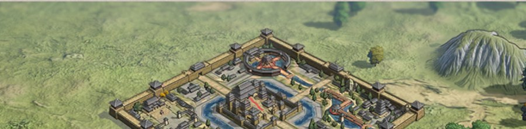

지휘부·대장용 · 게임 내 공식 규칙 반영판
개정 2026-10-22 · 재개 시즌 게임 내 규칙 화면 반영
지휘부·대장용 · 게임 내 공식 규칙 반영판
개정 2026-10-22 · 재개 시즌 게임 내 규칙 화면 반영
용쟁호투 상세 작전서
게임 내 "이벤트 규칙" 전체 화면(신청 조건부터 45분 타임라인, 산출 수치, 보상까지)을 캡처해 재구성한 자료에, 재개 시즌의 게임 내 규칙 화면(2026-10-22 캡처)으로 다시 맞췄습니다. 화면에도 수치가 없는 항목만 "미확인"으로 남겨두었습니다.
- 신청 시작
- 매주 수 01:00
- 매칭 상대 공개
- 매주 토 09:00
- 본전투 시작
- 매주 일 21:30
- 교전 시간
- 45분 (22:15 종료)
01참가 자격 · 신청
신청은 동맹 단위입니다. 조건을 넘기지 못하면 애초에 대회 명단에 오르지 못합니다.
신청 조건 3가지 확인
동맹 생성일 15일 초과, 서버 랭킹 상위 20위 이내, 최소 동맹원 40명. 세 조건을 모두 충족해야 동맹 관리자(맹주·부맹주)가 수요일 01:00부터 신청할 수 있습니다. 신청이 완료되면 조건과 무관하게 모든 동맹원이 참가 가능합니다.
참가 관리·이벤트 준비는 신청 즉시 열립니다 확인
예전에는 토요일 09:00 매칭 공개 후에야 열렸지만, 이제는 동맹 신청이 완료되는 즉시 참가 관리(인원 배정)와 이벤트 준비(편성 복제, 지원 무장·전법·매 선택) 화면에 들어갈 수 있습니다. 매칭 상대는 여전히 토요일 09:00에 공개됩니다.
전시 기간은 종료 후 1일 확인
일요일 22:15 종료 직후 승패 보상과 개인 포인트 구간 보상이 우편 발송됩니다(부전승 보상도 종료 후 발송). 이벤트 데이터(전투 기록·상대 전략)는 종료 후 1일간 전시되며 화요일 01:00 이후에는 볼 수 없습니다.
02참가 조직 구조
맹주·부맹주가 인원을 어떻게 나누느냐가 승패를 직접 결정합니다. 이번 시즌부터 주력군과 분대는 서로 다른 전장에서 싸우고, 분대가 이겨도 주력군이 지면 동맹은 패배입니다. 단, 분대원의 개인 구간 보상은 분대 전장 결과를 따릅니다.
주력군과 분대는 별도의 매칭 풀에서 각자 다른 상대를 만납니다.
분대 매칭 로직은 주력군과 동일하고, 두 전장의 주공은 같은 지도에 나타나지 않습니다. 따라서 주력군 전장의 모든 임무는 주력군 인원만으로 수행해야 합니다. 게임 규칙 화면에 "주력군의 승패가 동맹의 최종 승패를 직접 결정"한다고 명시되어 있습니다. 주력군에 들어가지 못한 인원이 분대로 참가합니다.
대장은 5명 확인
주력군·분대 모두 기본적으로 팀 내 번영도 상위 5명이 대장을 맡습니다. 대장만 지휘 기능과 동맹 책략을 사용할 수 있으므로, 번영도보다 실제 전투 감각이 있는 인원으로 바꿔 두는 것이 유효합니다.
신청 종료 5분 전 자동 배정 · 잠금 확인
미배정 인원은 번영도 순으로 주력군에 먼저 채워지고, 넘치면 분대로 갑니다. 미배정 인원이 없는데 주력군이 미달이면 분대 인원이 번영도 순으로 주력군에 끌어올려집니다. 이 시점에 인원이 최종 잠금되어 이후 재배정이 불가능합니다.
분대 배정은 동맹 인원 35명 이상일 때만 확인
맹주·부맹주는 구성원을 주력군 또는 분대 전장에 배정할 수 있지만, 동맹 인원이 35명 이상이어야 분대 전장으로 인원을 보낼 수 있습니다. 배정한 인원은 맹주·부맹주가 다시 "미배정"으로 되돌릴 수 있고, 미배정 인원이 남아 있으면 관리자 화면에 레드닷이 뜹니다.
주력군·분대 정원과 신청 종료 시각 미확인
각 팀의 정원 상한과 신청 종료 시각(=자동 배정·잠금 시각의 기준)이 공지에 없습니다. 참가 관리 화면에서 확인해야 합니다.
- 신청 직후 참가 관리에서 주력군 인원부터 수동 배정 — 자동 배정은 번영도순이라 실전 감각과 다를 수 있습니다.
- 대장 5명 인선 — 동맹 책략을 쓸 사람들입니다.
- 신청 종료 5분 전까지 배정 확정 — 이후 잠금.
- 본전투 입장 시 전장 전환 버튼으로 본인 소속 전장(주력군/분대)에 들어왔는지 확인.
03이벤트 준비 · 편성
평소의 스펙 격차 대부분이 전장에 들어오는 순간 사라집니다. 무엇이 지워지고 무엇이 남는지가 전략의 출발점입니다.
| 항목 | 처리 | 신뢰도 |
|---|---|---|
| 무장 레벨 · 고유 전법 · 전법 레벨 | 이벤트 내 동일 레벨로 통일 | 확인 |
| 이벤트 속성 보정 | 모든 참가 주공에게 50% 적용 | 확인 |
| 원래 지도의 버프 · 디버프 | 적용되지 않음 | 확인 |
| 전투 판정 | "부대 방어·3" 이후의 수학 전투 속성만 반영 | 확인 |
| 장비 | 원 서버의 것을 그대로 사용 | 확인 |
| 전투매 | 원 서버의 것을 그대로 사용 | 확인 |
| 지원 장비 · 지원 전투매 | 이벤트 내에서만 쓸 수 있는 별도 지원품 제공 | 확인 |
| 편성 정보 | 원클릭 복제. 이벤트 편성에서 수정해도 원본은 영향 없음 | 확인 |
| 무장 상세정보 · 레벨업 · 초기화 | 이벤트 편성 내에서는 불가능 | 확인 |
| 행군 속도 | 원 서버 지도와 동일 (재개 시즌 변경) | 확인 |
| 공격 범위 제한 | 취소됨 (재개 시즌 변경) | 확인 |
| 성 이전 | 모든 부대가 관청에 있지 않아도 가능. 이전 완료 시 관청 밖 부대는 자동 복귀 | 확인 |
| 성 이전 위치 | 길 연결 없이 이벤트 건물 인근 타일 또는 기타 비보호 구역 타일로 이전 가능 | 확인 |
장비와 전투매는 통일 대상이 아닙니다. 완전 평준화를 원했다면 이것도 통일했을 텐데 남겨뒀다는 건, 축적분의 가치를 일부 유지하려는 의도로 보입니다.
도감이 빈약할수록 빌릴 수 있는 폭이 넓습니다 확인
지원 무장 1명, 지원 전법 2개, 지원 매 4마리를 선택할 수 있습니다. 선택 범위는 주공님 도감에 보유하지 않은 무장·전법으로 제한됩니다. 도감에 빈자리가 없으면 무장 1명의 능력치 강화로 대체됩니다. 이벤트 선택 내용은 이번 시즌 한정입니다.
강화 효과의 크기는 여전히 비공개 미확인
공지는 "구체적인 강화 효과는 이벤트 선택 화면에 따름"이라고만 합니다. 전법 2개를 빌리는 쪽과 무장 1명을 강화하는 쪽 중 무엇이 유리한지는 준비 화면을 직접 열어봐야 판단할 수 있습니다.
04이벤트 책략
재개 시즌에 전면 개편되었습니다. 개인 책략은 각자 자기 부대에, 동맹 책략은 대장(5명)이 전체 동맹원에게 씁니다. 개인·동맹 모두 책략마다 1회만 쓸 수 있고, 한 번에 1종씩, 책략 사이에는 5분 간격이 있습니다. 아군·적군의 책략 사용 현황(발동 중 잔여 시간 / 종료 / 미사용)이 전장에 표시되므로, 상대가 언제 무엇을 썼는지 보고 대응할 수 있습니다.
| 책략 | 효과 | 쓰는 때 |
|---|---|---|
| 구사부상 | 이벤트 의원의 부상병 치료 즉시 100% 완료 | 총력전 직후 병력 즉시 복구 |
| 귀부신공 | 성 방어도 즉시 100% 회복 | 관청이 집중 공격받을 때 |
| 계일정공 | 현재 성 이전 시간 즉시 100% 단축 | 목표 건물 근처로 즉시 전진 배치 |
| 책략 | 효과 | 지속 | 쓰는 때 |
|---|---|---|---|
| 횡소천군 | 참가 부대 공격 속성 +5% | 300초 | 비룡성·만상성 1차 쟁탈 진입(7분) 총력전 |
| 견고불최 | 참가 부대 방어 속성 +5% | 300초 | 횡소천군 5분 뒤 — 7분 기준을 채우는 막바지 버티기 |
| 급속 행군 | 행군 속도 +50% | 300초 | 개전 직후 전진, 도적거점·부두로의 이동 |
| 묘수회춘 | 이벤트 의원 치료 속도 +100% | 180초 | 1·2차 쟁탈 사이 재정비 구간 |
| 교탈천공 | 성 방어도 회복 속도 +100% | 300초 | 상대가 관청을 노릴 때 |
책략은 전부 1회용 — 공격·방어는 나눠 켜야 합니다 확인
동맹 책략은 한 번에 1종, 책략 사이 5분 간격이라 횡소천군과 견고불최를 동시에 켤 수 없습니다. 둘 다 300초짜리이므로 횡소천군 → 5분 뒤 견고불최로 이어 켜면 10분 동안 공격·방어 보정이 끊기지 않습니다. 비룡성·만상성의 7분 기준 구간을 거의 그대로 덮는 길이입니다. 각 1회뿐이므로 1차·2차 쟁탈 중 어디에 쓸지는 미리 정해 두어야 합니다 — 1차에서 격차를 만드는 쪽을 권합니다(10 전략).
상대 책략 현황이 보입니다 확인
아군·적군 책략의 발동 중 잔여 시간 / 종료 / 미사용이 전장에 표시됩니다. 상대도 각 1회뿐이므로, 상대가 공격 책략을 이미 썼는지 확인하고 남은 쪽이 언제 나올지 계산할 수 있습니다.
05전장 건물 6종
이벤트 성지는 정비 → 쟁탈 → 산출 3단계(맹호성·비룡성·만상성) 또는 정비 → 쟁탈 2단계(그 외 3종)를 반복합니다. 쟁탈 기간에만 뺏고 뺏길 수 있고, 나머지 기간은 결과가 확정된 채로 흘러갑니다. 매 휴전(정비) 진입 시 소속이 초기화되어 다음 쟁탈 기간에 처음부터 다시 다툽니다.
모든 건물은 주둔 상한 30부대입니다.
재개 시즌에 확정된 규칙입니다. 주력군 전체를 한 건물에 몰아넣는 운영은 불가능하고, 30부대를 넘는 병력은 다른 건물로 나눠야 합니다. 같은 이름의 건물에는 이제 접미사가 붙어 전황 화면에서 구분됩니다(예: 맹호성 A/B — 실제 표기는 게임 확인 필요). 맹호성·비룡성·도적거점은 쟁탈·휴전 진입 20초 전 미니맵에 알림 이펙트가 뜨고, 아군이 점령한 건물은 미니맵에서 파란색, 아니면 빨간색으로 표시됩니다.
 맹호성 1급
맹호성 1급
동맹 점수 · 4곳 · 가장 먼저 열림
- 휴전→쟁탈→생산 3단계 순환. 개전과 동시에 쟁탈(1~12분)이 열리는 유일한 성입니다.
- 누적 점령 6분을 먼저 채우면 최종 귀속권 확정. 지도 네 모서리에 4개. 개인 포인트 초당 3,000.
- 신규: 포인트 가산 버프 — 쟁탈 기간 중 일부 맹호성에 가산 버프가 붙고, 그 맹호성의 유효 동맹과 점령 동맹이 같을 때 산출 기간 초당 포인트가 늘어납니다. 전황 목록의 증가 아이콘으로 식별. 배율 미확인
 비룡성 2급
비룡성 2급
동맹 점수 · 2곳
- 맹호성과 같은 3단계 순환이지만 처음 6분은 휴전이고 7~21분에 쟁탈이 열립니다(15분, 5종 중 최장).
- 지도 중앙 세로축의 위·아래 2곳. 만상성과 구간이 완전히 같습니다.
- 개인 포인트 초당 5,000 (맹호성 3,000 · 만상성 6,000).

 만상성 3급
만상성 3급
신규 · 정중앙 1곳 · 성 중 최대 산출
- 재개 시즌에 지도 정중앙 성이 3급 "만상성"으로 분리되었습니다. 단계 시간·확정 기준(7분)은 비룡성과 동일합니다.
- 한 곳에서 4,140점 — 맹호성 1곳(2,700)의 1.5배로, 성 하나로는 가장 큽니다.
- 개인 포인트 초당 6,000 — 성 3종 중 가장 높습니다.
 도적 거점
도적 거점
대량 포인트 1회 · 승자독식
- 정비·쟁탈 2단계뿐. 매 쟁탈 기간마다 4개 중 2개가 무작위로 활성화.
- 전원에게 공격 횟수가 부여되고(파견 1회=1회 소모), 정비 진입 시 피해량 최다측이 포인트를 독식합니다.
- 신규: 쟁탈 기간에 들어갈 때마다 획득 포인트가 점점 증가합니다. 건물 분포 화면에는 4,000점으로 표기되어 있고, 라운드별 증가 폭은 미확인
 조운 부두
조운 부두
1회성 소량 포인트 · 도하 게이트
- 누적 점령 시간이 기준을 넘기면 소량 포인트와 함께 섬 진입(장작영 접근) 자격을 얻습니다.
- 기간 내 어느 쪽도 점령 못 하면 중립 유지, 양측 모두 포인트 없음.
- 재개 시즌: 속성 증가 효과 폐지, 1회성 포인트만 제공. 포인트 값은 이전과 같은 400점(건물 분포 화면 확인). 필요한 누적 시간("지정된 기준 시간")은 미확인
 장작영
장작영
1회성 소량 포인트 (버프 폐지)
- 조운 부두를 거쳐야 접근 가능. 강 건너편에 있어 본대와 물리적으로 단절됩니다.
- 재개 시즌: 전체 동맹원 속성 버프가 폐지되고 1회성 포인트만 준다고 패치 공지됐습니다. 다만 게임 내 건물 설명에는 아직 "임시 속성 버프 획득" 문구가 남아 있습니다 공지와 충돌

배치·개수 확인
게임 내 "건물 분포" 화면 캡처
- 맹호성 4개 — 중앙 사각형의 네 모서리
- 비룡성 2개 — 정중앙 세로축의 위·아래
- 만상성 1개 — 지도 정중앙
- 도적 거점 4개 — 만상성을 둘러싼 대각선(안쪽 마름모)
- 조운 부두 8개 — 남북 강 위에 4개씩
- 장작영 16개 — 맵 맨 위·아래 가장자리에 8개씩
0645분 작전 시계표
재개 시즌 게임 내 "단계 시간" 화면 기준입니다. 맹호성·도적거점·조운부두·장작영은 이전과 같고, 비룡성은 1분씩 늦춰졌으며(7~21분 쟁탈) 만상성이 같은 구간으로 추가되었습니다. 색은 게임 내 표기를 그대로 따릅니다 — 쟁탈(전투 가능), 산출(포인트 생산, 3분 고정), 정비(대기, 재도전 불가).
| 건물 | 1차 쟁탈 | 2차 쟁탈 | 비고 |
|---|---|---|---|
| 1~12분 | 24~35분 | 개전 즉시 열림. 쟁탈 종료 직후 3분간 생산(방어 불필요) | |
| 7~21분 | 29~43분 | 최초 6분은 휴전. 쟁탈창 15분으로 가장 김. 2차 생산(44~46분)은 45분 종료로 잘림 | |
| 7~21분 | 29~43분 | 비룡성과 완전히 같은 구간 | |
| 14~23분 | 36~45분 | 매 라운드 4곳 중 2곳만 랜덤 개방 | |
| 12~19분 | 34~41분 | 이 창에서 확보해야 장작영 진입 가능 | |
| 14~19분 | 36~41분 | 쟁탈창이 6종 중 가장 짧음(6분) |
누적 점령 시간이 기준(맹호성 6분 · 비룡성·만상성 7분)에 먼저 닿는 쪽이 최종 귀속권을 가져갑니다.
부대가 주둔하면 그 동맹에 임시 귀속되어 시간이 쌓이고, 뺏기면 멈췄다가 재점령 시 기존 누적에 이어서 쌓입니다. 기준에 닿는 그 순간 확정이므로 이후에는 뺏겨도 생산 포인트는 확정한 쪽이 받습니다. 양쪽 모두 기준에 못 미친 채 생산 기간에 들어가면 누적 시간이 더 긴 쪽이 포인트를 가져가고, 같으면 그 시간에 먼저 도달한 쪽이 가져갑니다 — 어느 경우든 포인트가 사라지지는 않습니다. 도적거점은 시간이 아니라 피해량 기준입니다.
조운부두·장작영의 기준 시간은 화면에 "지정된 기준 시간"이라고만 되어 있습니다.
장작영은 부두를 먼저 뚫어야 들어갈 수 있어 같은 사이클에 두 곳을 다 먹기가 빠듯합니다(부두 12~19분 · 장작영 14~19분). 재개 시즌에는 장작영 버프가 폐지되어 얻는 것이 1회성 소량 포인트(부두 400 · 장작영 180)뿐이므로, 주력 병력을 여기에 쓸 이유가 크게 줄었습니다. 기준 시간 미확인
막판 스틸이 아니라 초반 지속 점유가 핵심입니다 확인
기준 시간을 먼저 채우는 쪽이 그 순간 이기므로, 쟁탈창 막판에 몰아쳐서 뒤집는 전략은 성립하지 않습니다. 개전과 동시에 진입해 최대한 끊기지 않고 버티는 쪽이 유리하며, 뺏겨도 누적 시간은 유지되므로 계속 재탈환하는 것도 유효합니다. 기준을 못 채워도 누적이 더 길면 포인트를 가져가므로, 열세여도 주둔 시간을 1초라도 더 쌓는 것이 의미가 있습니다.
07동맹 포인트 · 추격 메커니즘
동맹 포인트로만 승패를 가립니다. 점령권을 가진 쪽이 생산 기간에 포인트를 얻고, 종료 시 누적 동맹 포인트가 많은 쪽이 이깁니다. 개인 포인트는 개인 구간 보상 전용입니다.
| 건물 | 초당 산출 | 1회 총생산량 |
|---|---|---|
| 15/s | 2,700 | |
| 20/s | 3,600 | |
| 23/s | 4,140 | |
| — (1회 지급) | 4,000 라운드마다 증가 | |
| — (기준 초과 시) | 400 | |
| — (기준 초과 시) | 180 |
성 7곳을 한 사이클 모두 지키면 22,140점 — 그중 비룡성 2곳 + 만상성이 11,340점으로 절반이 넘습니다.
맹호성 2,700×4 = 10,800점, 비룡성 3,600×2 = 7,200점, 만상성 4,140점. 맹호성은 4곳에 흩어져 있어 병력이 많이 들지만, 비룡성·만상성 3곳은 중앙 세로축에 모여 있고 한 곳당 값도 큽니다. 다만 2차 사이클의 비룡성·만상성 생산(44~46분)은 45분 종료로 2분만 진행되어 2/3(비룡 2,400 · 만상 2,760)만 들어오는 것으로 보입니다 미확인. 주둔 상한이 30부대라 3곳을 동시에 지키려면 최소 90부대를 나눠 넣어야 합니다.
가산 버프는 "유효 동맹 = 점령 동맹"일 때만 확인
쟁탈 기간 중 일부 맹호성에 가산 버프가 붙고, 전황 목록에 증가 아이콘이 뜹니다. 가산은 해당 맹호성의 유효 동맹과 실제 점령 동맹이 일치할 때만 적용되어 산출 기간 초당 포인트를 늘립니다. 정확한 배율과 "유효 동맹"의 판정 기준은 건물 정보 화면에서 확인해야 합니다 미확인
추격 메커니즘: 격차 50% 초과 시 발동 확인
양측 동맹 포인트 격차가 50%를 넘으면 열세 측에 추격 보정이 걸립니다. 대상은 맹호성·비룡성·도적거점 3종뿐이며(만상성은 규칙 문구에 없음), 이 3종 중 점령 중인 건물 단 1곳에서만 발동합니다.
계산 예시 (게임 공식 예시를 실제 수치로 환산) 확인
게임 예시: A가 B보다 60% 앞선 상황에서 B가 같은 종류 성 2곳을 점령 중이면, 그중 1곳만 산출량이 격차 비율만큼(60%) 올라 초당 100점→160점이 되고 나머지 1곳은 그대로입니다. 실제 수치로 바꾸면 맹호성 15→24점, 비룡성 20→32점입니다. 열세 측이라도 벌어진 차이를 단번에 뒤집기는 어렵다는 뜻이므로, 초반 사이클(1~24분)에서 격차를 만들지 않는 것이 후반 추격보다 훨씬 중요합니다.
어느 건물에서 발동할지 결정 기준은 비공개 미확인
3종 중 "1곳에서만" 발동한다고만 되어 있을 뿐, 어떤 건물이 선택되는지(점령 순서·산출량 기준 등)는 명시되지 않았습니다.
08개인 포인트
재개 시즌부터 개인 랭킹은 폐지되고, 개인 포인트가 어느 구간에 도달했는지로 보상이 정해집니다. 남과 경쟁하는 것이 아니라 내 점수만 채우면 되는 구조입니다.
구간 보상은 최고 달성 구간 1종만 확인
이벤트 종료 시 도달한 가장 높은 구간의 보상 하나만 받습니다(하위 구간 누적 지급 아님). 승리 측과 패배 측 보상표가 따로 있고, 시즌마다 달라집니다. 이벤트 화면의 개인 보상 탭을 열면 현재 포인트로 도달 가능한 구간으로 자동 이동합니다.
내 전장의 승리가 개인 보상도 키웁니다 확인
같은 구간이라도 승리 측 보상표가 더 큽니다(최상위 600만+ 구간: 옥재 20만 vs 15만). 구간은 350만부터 50만 단위로 6개이며, 350만 미만 구간은 보상표에 표시되지 않습니다(건물에 몇 분만 주둔해도 넘기는 수준). 주력군 인원은 주력군 결과, 분대 인원은 분대 전장 결과로 승·패 표가 정해집니다. 개인 포인트를 쌓는 것과 내 전장이 이기는 것이 더 이상 따로 놀지 않습니다. 구간별 수치는 보상 페이지에 정리했습니다.
| 행동 | 포인트 |
|---|---|
| 적 병사 중상 1명당 (레벨 무관) | 1 |
| 도적거점 성방군(NPC) 처치 1명당 | 0.001 |
| 조운부두 점령 후 1초마다 | 10,000 |
| 장작영 점령 후 1초마다 | 10,000 |
| 만상성 점령 후 1초마다 | 6,000 |
| 비룡성 점령 후 1초마다 | 5,000 |
| 맹호성 점령 후 1초마다 | 3,000 |
재개 시즌에 점령 개인 포인트가 크게 올랐고(이전 시즌 500~800), 도적거점 처치 포인트는 1 → 0.001로 사실상 없어졌습니다. 성끼리는 동맹 포인트와 순서가 같지만, 동맹 포인트가 거의 없는 조운부두·장작영이 초당 10,000으로 가장 높습니다. 성은 만상성 6,000 > 비룡성 5,000 > 맹호성 3,000입니다. 화면 문구가 "점령 후 1초마다"이므로 동맹 포인트(생산 기간 3분만)와 달리 점령하고 있는 동안 계속 쌓이는 것으로 봅니다.
개인 구간 보상은 "어디에 얼마나 오래 주둔했나"로 거의 결정됩니다.
맹호성 6분 = 108만, 비룡성 7분 = 210만, 만상성 7분 = 252만, 조운부두 1분 = 60만. 교전(중상 1명당 1)과 도적거점(처치당 0.001)은 비교가 안 될 만큼 작습니다. 따라서 도적거점만 도는 인원은 개인 보상이 크게 낮아집니다 — 작전 배치 시 개인 보상 격차도 함께 고려해야 합니다(보상 페이지 추정표).
09보상
승패 보상은 참가 주력군의 승패에 따라 동맹 전체가 받고, 개인 포인트 구간 보상은 각자 도달한 구간에 따라 개별 지급됩니다. 둘 다 이벤트 종료 후 우편으로 함께 발송됩니다.
승패 보상: 옥재 1.7배, 자원 수레 2배 — 패배해도 절반 이상은 남습니다.
재개 시즌 승패 보상은 옥재 50만/30만, 자원 수레 150/75 ×3종, SSR 무장 전법 조각 선택 상자 20/10, 매알 10/5, 구현령 2/1입니다. 이전 시즌에 있던 금장 연고(600/400)는 승패 보상에서 빠지고 개인 구간 보상으로 옮겨졌습니다. 개인 랭킹·이벤트 임무 보상은 폐지되었고, 개인 포인트 구간 보상이 승리/패배 측으로 나뉘어 지급됩니다(350만~600만+ 6개 구간).
10전략 재개 시즌 초안
재개 시즌 게임 화면(성 7곳 · 6/7분 확정 기준 · 책략 각 1회 · 주둔 상한 30부대)에 맞춰 다시 짠 초안입니다. 이전 시즌의 "도하조"는 존재 이유였던 장작영 버프가 사라져 폐지했습니다. 시각은 본전투 시작(21:30) 기준 경과 분이며, 첫 실전 후 다시 다듬습니다.
주력군과 분대는 서로 다른 전장에서 각자 싸우지만, 전장 안에서 쓰는 전략은 같습니다.
고정된 조를 나누기보다 투력에 따라 기본 역할을 정해 두고, 대장이 전황을 보며 부대를 유연하게 돌리는 것이 핵심입니다. 아래는 두 전장 공통의 기본 흐름입니다.
| 시점 | 책략 | 목적 |
|---|---|---|
| 0분 | 급속 행군 | 맹호성 4곳 동시 진입 — 누적 6분을 한시라도 먼저 |
| 6분 | 횡소천군 | 비룡성·만상성 진입 총력전(공격 +5%, 5분) |
| 11분 | 견고불최 | 7분 기준을 채우는 막바지 버티기(방어 +5%, 5분) |
| 16분 | 묘수회춘 | 1차 확정 후 부상병 회복, 2차(23분) 대비 |
| 상황 | 교탈천공 | 상대가 관청을 노릴 때 성 방어도 회복 — 2차용 예비 |
1차 사이클이 사실상 승부처입니다 확인
2차 사이클의 비룡성·만상성 생산은 44~46분이라 45분 종료로 2분만 진행됩니다. 1차의 성 7곳(22,140점)이 2차(최대 18,360점)보다 크고, 책략도 각 1회뿐입니다. 1차에서 벌어진 격차는 추격 메커니즘(3종 중 1곳만, 격차 비율만큼)으로 완전히 메워지지 않으므로, 공·방 책략은 1차에 쓰고 1차를 이기는 쪽이 낫습니다.
중앙 세로축 3곳이 맹호성 4곳보다 값집니다 확인
비룡성 2곳 + 만상성 = 11,340점으로 맹호성 4곳(10,800점)보다 많고, 세 곳이 한 줄로 붙어 있어 서로 지원하기도 쉽습니다. 병력이 부족하면 맹호성 1~2곳을 포기하더라도 중앙 세로축 3곳에 가장 강한 부대를 둡니다.
기준을 못 채워도 더 오래 버틴 쪽이 가져갑니다 확인
양쪽 모두 6분/7분 기준에 못 미치면 누적 시간이 더 긴 쪽이 생산 포인트를 받습니다. 그래서 "흔들어서 상대 산출을 무산시키기"는 통하지 않고, 우리 누적을 상대보다 길게 만드는 것만 의미가 있습니다. 뺏겨도 누적은 유지되니 계속 재탈환합니다.
30부대 상한은 상대에게도 같습니다 확인
상대도 한 건물에 30부대까지만 넣을 수 있으므로, 들어간 부대 질(투력)이 그대로 승부가 됩니다. 가장 강한 30부대를 만상성에, 다음을 비룡성·가산 버프 맹호성에 배치하는 순서가 중요합니다. 건물 밖에 남는 병력은 교체 투입과 공성 지원에 씁니다.
상대 책략 현황을 보고 움직입니다 확인
상대도 횡소천군·견고불최를 각 1회만 씁니다. 상대가 켠 직후 5분은 정면 교전을 피하고, 둘 다 소진된 뒤에 치는 것이 효율적입니다 — 적군 책략 현황이 전장에 표시됩니다.
개인 구간 보상은 주둔 시간을 따라옵니다 확인
맹호성 6분(108만) + 만상성 7분(252만) 또는 비룡성 7분(210만)을 두 사이클 돌면 확정 기준만으로 636만~720만으로 최상위 600만+ 구간입니다. 투력이 낮아 성에 오래 못 버티는 인원도 조운부두·장작영(초당 10,000)에서는 1분에 60만씩 쌓여, 두 사이클이면 충분히 상위 구간에 닿습니다. 도적거점 처치는 0.001점이라 개인 포인트로는 거의 의미가 없으므로, 도적거점만 도는 인원이 생기지 않도록 대장이 돌려 줘야 합니다.
분대가 이겨도 주력군이 지면 동맹은 패배입니다 확인
주력군과 분대는 서로 다른 전장에서 각자 다른 상대와 싸우고, 동맹 최종 승패와 승패 보상은 주력군 결과로만 정해집니다. 분대 전장의 결과는 동맹 승패를 바꾸지 못하므로, 가장 강한 인원은 반드시 주력군에 배정해야 합니다. 분대도 자기 전장 안에서 위와 같은 흐름(맹호성 → 만상성·비룡성, 낮은 투력은 부두·장작영, 중간부터 도적거점)으로 움직입니다.
분대원의 개인 구간 보상은 분대 결과를 따릅니다 확인
동맹 승패 보상은 주력군 결과로, 분대원의 개인 구간 보상은 분대 전장 결과로 승리 측·패배 측 표가 정해집니다. 동맹 승패에는 영향이 없어도 분대가 이기면 분대원 개인 보상이 커지므로, 분대도 자기 전장에서 이기는 작전을 따로 세울 가치가 있습니다.
11재개 시즌 남은 확인 사항
재개 시즌 게임 화면으로 책략 횟수, 대장 기본값, 성 이전 규칙, 단계 시간, 중앙 성(만상성), 승패·구간 보상이 확인되었습니다. 아래는 화면에도 수치가 없어 첫 실전으로 확인해야 하는 항목입니다.
- 맹호성 가산 버프 배율, 대상 맹호성 선정 방식, "유효 동맹" 판정 기준
- 도적거점 라운드별 포인트(점증 폭) — 분포 화면은 4,000으로 표기
- 조운부두·장작영 기준 시간, 장작영 "임시 속성 버프" 문구가 실제로 남아 있는지(패치 공지는 폐지)
- 비룡성·만상성 2차 생산이 45분 종료로 2분만 진행되는지
- 점령 개인 포인트가 주둔한 주공 전원에게 각각 쌓이는지, 확정 후 생산 기간에도 계속 쌓이는지
- 주력군·분대 정원과 신청 종료 시각
- 지원 무장 강화 효과의 정확한 수치 (이전 판부터 미확인)